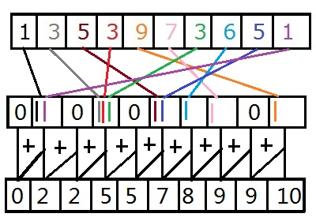
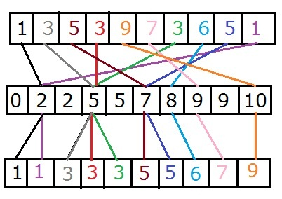

Counting Sort
Introduction:
Up to this point in sorting algorithms, such as Quick Sort and Merge Sort, we have been bounded by the theoretical limit that all sorting algorithms must compare elements to sort. This is not always the case though, in Counting Sort, Radix Sort and Bucket Sort, to a point, the algorithms do not require any comparisons. Later on we'll even cover algorithms that doesn't require that each core needs to look at every element to sort the array. Given that these aren't comparison sorts we will need to know the type of data beforehand. The biggest problem we run across with the counting sort is that this algorithm usually only applies towards integer based data types. This is why Quick Sort is considered to be the fastest general sorting algorithm. I actually address this issue in the Radix Sort, and show that for any practical data type Radix Sort can sort those types and will be faster than Quick Sort. In the next sections I will implement the algorithm and describe its limitations.
Prerequisites:
It's suggested that you read the
Memory Management section under Parallel Computing. I will be discussion the limitations and speed decreases as the arrays get large enough to be outside of the cache.
Algorithm Design:
In this lesson I will only be sorting positive integers, Counting Sort can be modified for negative values by adding the lowest value to each number then doing the sorting algorithm. I'm also going to assume that we know the largest value in the array. Under normal conditions you would have to make a second pass to find the largest value. The reason why this algorithm is called the Counting Sort, is because it literally counts the number of occurrences each value appears in the array, officially this is called a histogram. A histogram is a list of occurrences each value occurs in the original array. In our case we will be using an array where the index is the number inside the original array and the value inside that position is the number of occurrences. A small example of this would look like this:
Original = {1, 3, 5, 3, 9, 7, 3, 6, 5, 1}, Histogram = {0, 2, 0, 3, 0, 2, 1, 1, 0, 1}.
The second part of the sort is to find the prefix sum of that histogram. The prefix sum of an array states that for each element its value is the sum of every value before it plus itself. The final value in the histogram should equal the total number of elements within the original array. As an example, if we take the histogram above for position 4, given that positions start at 0, would be 0 + 2 + 0 + 3 + 0 = 5. The final result of the prefix sum would be {0, 2, 2, 5, 5, 7, 8, 9, 9, 10}. Instead of, for each element in the histogram, adding up each element and storing it into a new histogram I simply traversed through from the beginning and added itself plus the element before it. This keeps it efficient for the cache, if you want to see why the other way is bad took at computing the Fibonacci sequence with recursion. The following image shows how this overall process works.

By now you may be asking where the actual sorting portion of this algorithm is. We did the counting part of the sort, why isn't it sorted yet? If you're still following along I want you to take out a piece of paper and do the two steps above. Use your own numbers or mine if you want to verify everything with me so far. Create an empty array with the same size as the original array. Believe it or not each value in the histogram stores a position for the original values in the array to be positioned at. The trick to this is to start from the back of the original array and work your way towards the front. For each number in the array, go to that index in the histogram, take that value and subtract off one and store it back in the histogram. With that same value, with the minus one, go to that index in the new array and store the old value there. For example if I start at the end using 1, I go to position 1 in the histogram where the value is two. I subtract one from that, remembering to put it back into the histogram, then place the value 1 into index 1 in the new array. That array now looks like this { , 1, ... }. If I do that for the second to last value (5), I find position 5 in the histogram, subtract one, and I get the value 6. If I place 5 into spot 6 I now have this array: { , 1, , , , , 5, , , }. Keep going till you finish with the first value and you should see that it is fully sorted. Below is an example of how this looks.

The reason why we work backwards through the array is because it holds the original order of all duplicates. For example position 1, 3 and 6 all have the value 3 in them. When the array is sorted those hold positions 2, 3 and 4 respectively. With only one pass through the array this wont matter as much but when we do the Radix Sort this is important. The cool thing about this algorithm, if you want to sort in reverse order just reverse the prefix sum. For each position in the histogram it's the sum of all values in front of it including itself. If you think you've got it please continue onto the implementation.
Implementation:
The implementation of this algorithm is actually pretty simple. If you can tell from above, there's only three major parts to this algorithm. First I'll start with the histogram. The first part is to create an unsigned integer array of size max_value + 1, remember in this instance I'm not considering negative values. Each value must also be initialized to zero. The next step is to traverse through the array one element at a time and increment each spot inside the histogram. An example of that code looks like this:
unsigned int *hist = new unsigned int[max_value + 1]();
unsigned int *temp = new unsigned int[size];
for (int i = 0; i < size; i++)
hist[array[i]]++;
The next part is to find the prefix sum, in the example below I will show for both in order and reverse sorting. Remember I'm just taking each element of the histogram and adding it's previous element to it.
// In-Order
for (int i = 1; i <= max_value; i++)
hist[i] += hist[i - 1];
// Reverse Order
for (int i = max_value - 1; i >= 0; i--)
hist[i] += hist[i + 1];
Finally for the actual sorting portion, I'm going to traverse through the array backwards and find its respective position in the new array by using the position in the histogram. Also remember that we have to subtract one from the histogram value. That code looks like:
for (int i = size - 1; i >= 0; i--)
temp[--hist[array[i]]] = array[i];
Currently, the sorted array is stored in the temp array. From here you can either return it or copy it back over. Remember to free all the used memory after sorting. Full code along with a test can be downloaded below.
Extra Files:
Click here to download the test code.
Timings and Limitations:
In these tests I will be running between 100 million and 250 million unsigned integers with various ranges of integers.
100 Million Integers - Range: [0, 10]: 1.28 seconds.
100 Million Integers - Range: [0, 100]: 2.08 seconds.
100 Million Integers - Range: [0, 10000]: 3.23 seconds.
100 Million Integers - Range: [0, 1000000]: 11.27 seconds.
250 Million Integers - Range: [0, 10]: 3.77 seconds.
250 Million Integers - Range: [0, 100]: 5.69 seconds.
250 Million Integers - Range: [0, 10000]: 9.62 seconds.
250 Million Integers - Range: [0, 1000000]: 32.11 seconds.
As you can see the larger the ranges get the longer it takes to sort. We will be taking advantage of this, during the Radix Sort tutorial, and sorting ranges that fit within the L1 cache. If you really want to see where limitations come into play, start playing around with smaller arrays with larger values. For example the two element set {0, 100000000}, due to the size of the cache and how much memory it takes for counting sort to count this it's very inefficient in this example.
Conclusion:
Hopefully this lesson showed you that there are non comparison sorting algorithms, that in some cases it may be faster to have a specialized sorting algorithm than the standard Quick Sort. I've also implied that in the Radix Sort tutorial I address the issue of specialization, for any practical standard data type, and have the sort working for negatives and floating point values. If your curious why this algorithm is so great, it's highly efficient when it comes to parallel computing. Every part of this algorithm can be ran in parallel. The only exception is the last part when it's applied to other algorithms that need to maintain the order of duplicates. As always, if you like this tutorial, please share this with anyone who can benefit from these tutorials.